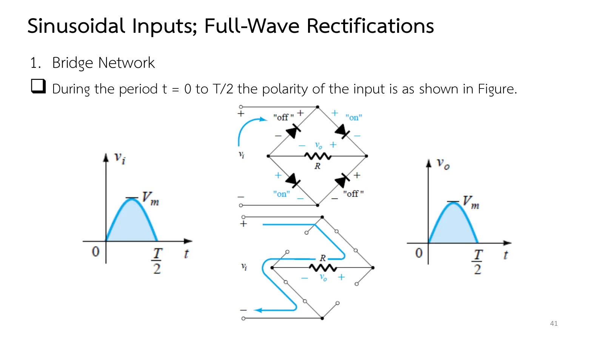
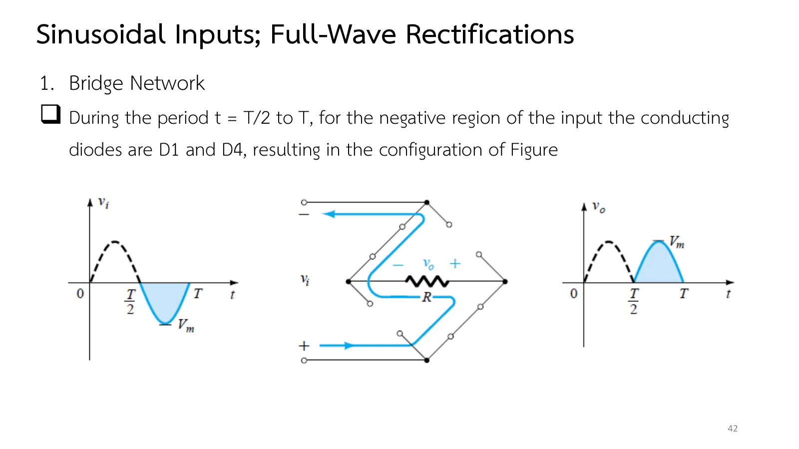
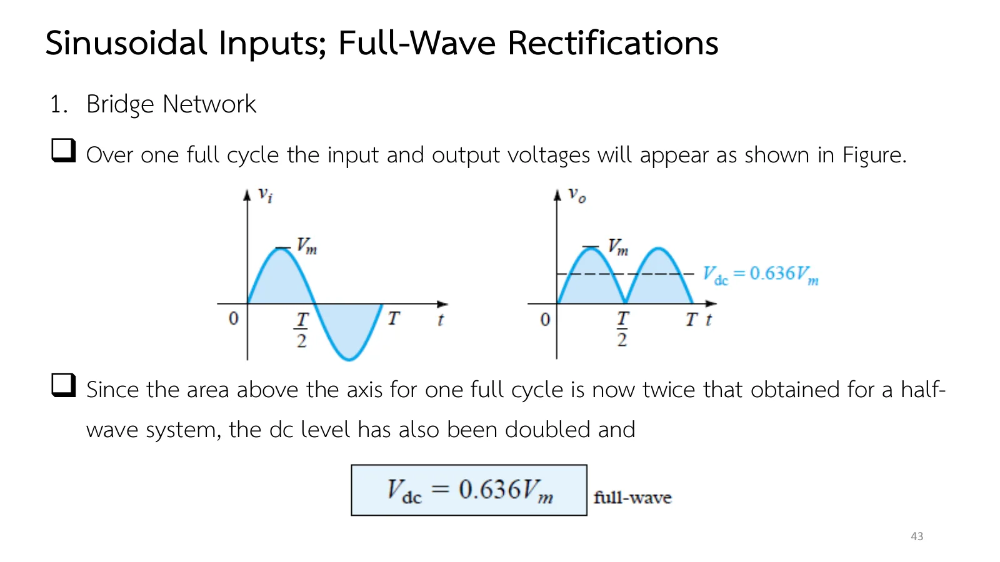
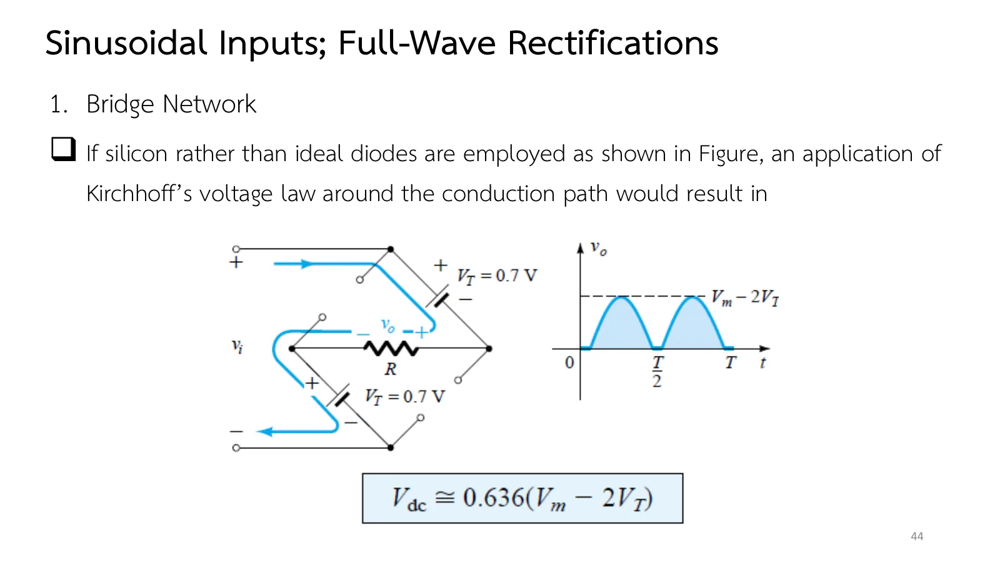
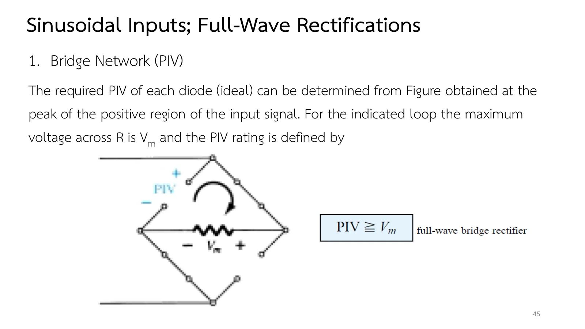
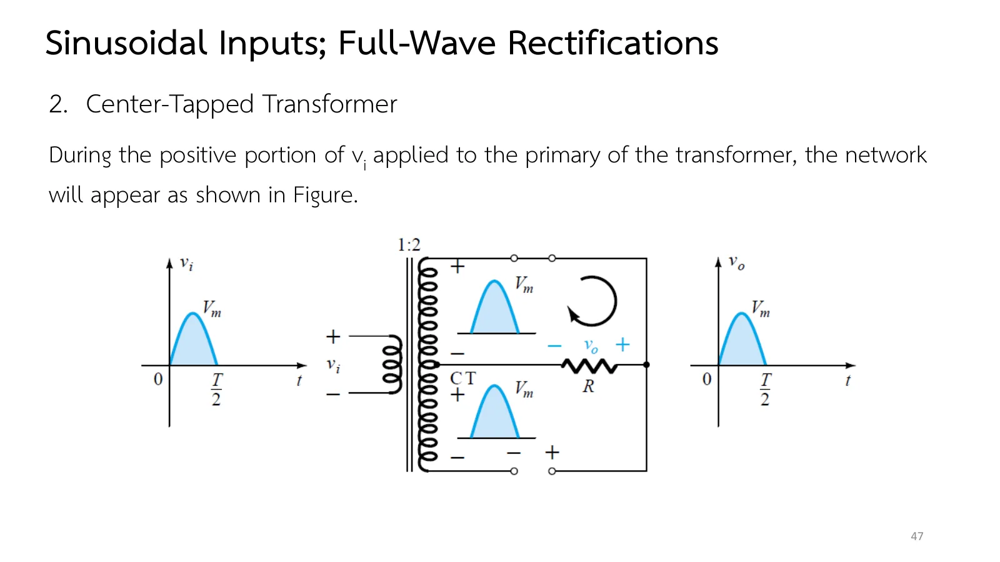
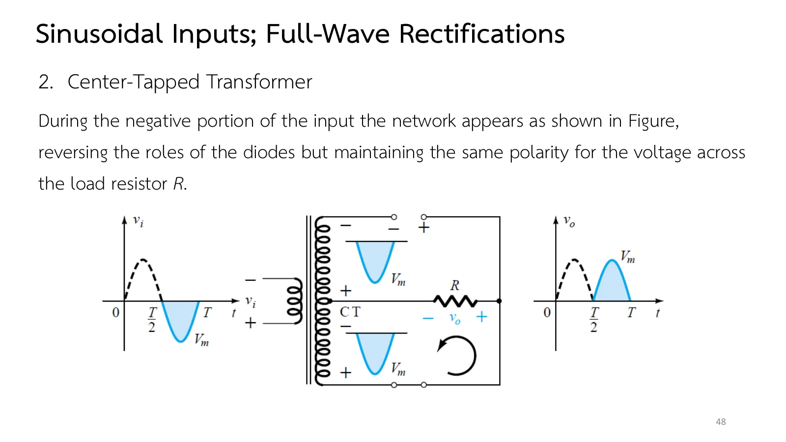
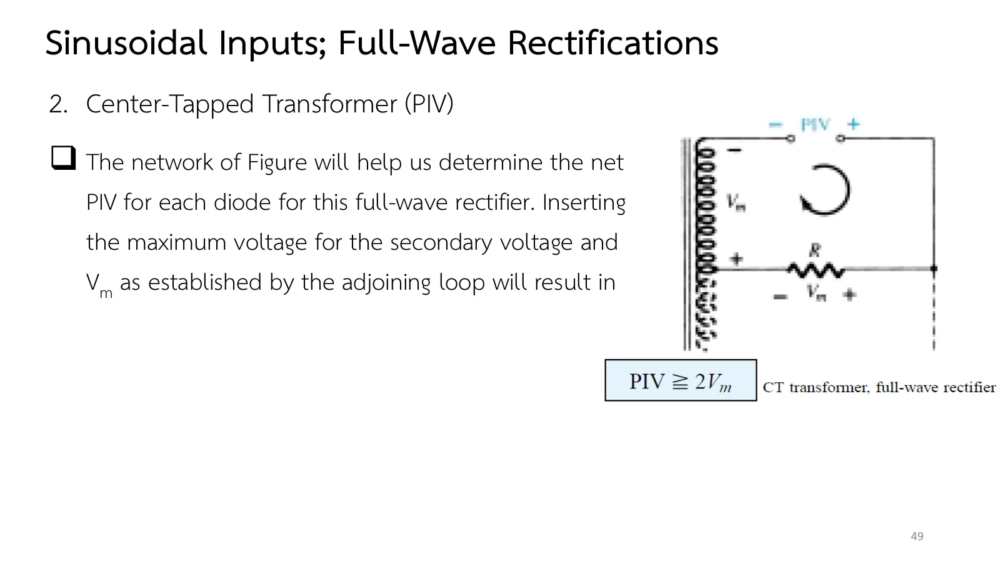

Almost every dc supply that plugs into the mains starts with a rectifier, but the half-wave circuit of page 2.5 throws away the negative half of every cycle. How do we get that half back? This page answers with full-wave rectification, which doubles the dc level, in two forms: a bridge of four diodes (section A) and a centre-tapped (CT) transformer with two diodes (section B), both simulated in time, along with the peak inverse voltage (PIV) each kind of diode must withstand. Then come the book's bridge with only two diodes, a practice problem on the centre tap, and more practice (chapter 2 slides, Part I, pp. 40–50 · Boylestad section 2.7).
The bridge: in the positive half D2 and D3 conduct, in the negative half D1 and D4; both halves drive current through R the same way, so the output is positive in both (slides pp. 41–43).
The dc level doubles: \(V_{dc} = 0.636V_m\) (slide p. 43). Every conduction path of a bridge has two diodes, so silicon diodes lower the peak by \(2V_K\) (slide p. 44).
The centre tap: a 1:2 transformer gives each half of the secondary a voltage equal to \(v_i\); the two diodes take turns, one per half, with only one diode in each path (slides pp. 46–48).
PIV: a bridge diode must withstand \(V_m\), a centre-tap diode \(2V_m\), since it sees the half-winding and the output in series (slides pp. 45, 49).
ตอนที่ 1 · บริดจ์ไดโอดสี่ตัว
Part 1 · The four-diode bridge
สองเส้นทาง แต่ผ่าน R ทางเดียว
Two paths, one way through R
สไลด์หน้า 40 บอกว่าการเรียงกระแสเต็มคลื่นเพิ่มระดับกระแสตรงที่ได้จากสัญญาณไซน์ได้ถึง 100% และวงจรที่คุ้นตาที่สุดคือไดโอดสี่ตัวที่จัดเป็นบริดจ์รูปข้าวหลามตัด: ขาเข้าต่อมุมบนและมุมล่าง โหลด R ต่อระหว่างมุมซ้ายกับมุมขวา
Slide p. 40 says full-wave rectification raises the dc level obtained from a sine wave by 100%, and the most familiar circuit for it is four diodes in a bridge, drawn as a diamond: the input on the top and bottom corners, the load R between the left and right ones.
The key is the current path. In the positive half D2 and D3 conduct (slide p. 41); in the negative half D1 and D4 take over (slide p. 42). The path changes, but the current always crosses R the same way, so the output is positive in both halves. The area above the axis is twice that of a half-wave output, and the dc level is \(V_{dc} = 0.636V_m\) (slide p. 43).
สไลด์หน้า 40: บริดจ์ไดโอดสี่ตัว · แตะรูปเพื่อขยายSlide p. 40: the four-diode bridge · tap to enlarge

สไลด์หน้า 41: ครึ่งบวก D2 และ D3 นำ · แตะรูปเพื่อขยายSlide p. 41: positive half, D2 and D3 on · tap to enlarge

สไลด์หน้า 42: ครึ่งลบ D1 และ D4 นำ · แตะรูปเพื่อขยายSlide p. 42: negative half, D1 and D4 on · tap to enlarge

สไลด์หน้า 43: \(V_{dc} = 0.636V_m\) · แตะรูปเพื่อขยายSlide p. 43: \(V_{dc} = 0.636V_m\) · tap to enlarge
↓ ส่วน A: ดูจุดเปลี่ยนเส้นทางทุกครึ่งคาบ แต่ยังผ่าน R จากขวาไปซ้ายเสมอ
↓ Section A: watch the dots switch paths every half period while always crossing R from right to left
The bridge has two costs. Every conduction path holds two diodes, so silicon diodes take \(2V_K\) off the peak and \(V_{dc} \cong 0.636(V_m - 2V_K)\) (slide p. 44); and each off diode must withstand a PIV of at least \(V_m\) (slide p. 45). Choose silicon diodes and lower \(V_m\) to 3 V to see how much of the peak is left.

สไลด์หน้า 44: ไดโอดซิลิคอนสองตัวในเส้นทาง · แตะรูปเพื่อขยายSlide p. 44: two silicon diodes in the path · tap to enlarge

สไลด์หน้า 45: PIV ของบริดจ์ · แตะรูปเพื่อขยายSlide p. 45: the PIV of a bridge · tap to enlarge
ภาพบนคือบริดจ์ตามสไลด์หน้า 40 ขาเข้าต่อมุมบนและมุมล่าง R ต่อระหว่างมุมซ้ายกับมุมขวา ถัดมาคือกระแสในไดโอดแต่ละตัวขณะนี้ และล่างสุดคือรูปคลื่น ดูจุดวิ่งเปลี่ยนเส้นทางทุกครึ่งคาบ แต่ยังผ่าน R จากขวาไปซ้ายเสมอ
On top is the bridge of slide p. 40: the input on the top and bottom corners, R between the left and right ones. Then the current in each diode at this instant, and the waveforms at the bottom. Watch the dots change path every half period, yet always cross R from right to left.
ตอนที่ 2 · ไดโอดสองตัวกับหม้อแปลงแท็ปกลาง
Part 2 · Two diodes and a centre-tapped transformer
ครึ่งบวก ขดครึ่งบนดันกระแสผ่าน D1 และ R (สไลด์หน้า 47) ครึ่งลบ ขดครึ่งล่างดันผ่าน D2 แทน แต่แรงดันคร่อม R ยังมีขั้วเดิม (สไลด์หน้า 48) ผลคือคลื่นเต็มรูปแบบเดียวกับบริดจ์ โดยทุกเส้นทางมีไดโอดเพียงตัวเดียว
The other way needs only two diodes, but a transformer with a tap at the middle of its secondary (slide p. 46). A 1:2 transformer puts exactly \(v_i\) across each half of the winding.
In the positive half the upper half-winding drives current through D1 and R (slide p. 47); in the negative half the lower one drives it through D2, and the voltage across R keeps its polarity (slide p. 48). The result is the same full wave as the bridge, with only one diode in each path.
สไลด์หน้า 46: หม้อแปลง 1:2 แท็ปกลาง · แตะรูปเพื่อขยายSlide p. 46: a 1:2 centre-tapped transformer · tap to enlarge

สไลด์หน้า 47: ครึ่งบวก D1 นำ · แตะรูปเพื่อขยายSlide p. 47: positive half, D1 on · tap to enlarge

สไลด์หน้า 48: ครึ่งลบ D2 นำ · แตะรูปเพื่อขยายSlide p. 48: negative half, D2 on · tap to enlarge
The cost of this circuit falls on the off diode: it sees one half-winding and the output in series, so it must withstand a PIV of at least \(2V_m\), twice that of the bridge (slide p. 49).

สไลด์หน้า 49: PIV ≥ \(2V_m\) · แตะรูปเพื่อขยายSlide p. 49: PIV ≥ \(2V_m\) · tap to enlarge
The simulation draws the two halves of the 1:2 secondary as two sources in series, each equal to \(v_i\), with the centre tap (CT) between them as the reference (the primary is not drawn). D1 and D2 take turns; the off diode sees up to \(2V_m\) in reverse.
The table of slide p. 50 sets the half-wave, bridge and centre-tap circuits side by side. With ideal diodes both full-wave circuits give the same \(0.636V_m\), twice the half-wave value; they differ in the voltage lost in the diodes, two for the bridge and one for the centre tap. For the centre tap, \(V_m\) is the peak secondary voltage measured to the tap.
สไลด์หน้า 50: ตารางสรุปสามวงจร · แตะรูปเพื่อขยายSlide p. 50: the three rectifiers in a table · tap to enlarge
สูตร "realistic" ในตารางสไลด์หน้า 50 ต่างจากสไลด์หน้า 35 และ 44: ตารางลบแรงดันของไดโอดหลังหาค่าเฉลี่ย เช่น \(0.318V_m - 0.7\) V ส่วนสไลด์หน้า 35, 44 และตำรา (สมการ 2.8, 2.11) ลบออกจาก \(V_m\) ก่อน เช่น \(0.318(V_m - 0.7)\) เมื่อ \(V_m\) ใหญ่กว่า 0.7 V มาก ทั้งสองแบบให้ค่าใกล้กัน แต่ที่ \(V_m\) = 20 V วงจรครึ่งคลื่นได้ 5.66 V เทียบกับ 6.14 V ค่าเฉลี่ยจริงของคลื่น (ภาพจำลอง) อยู่ระหว่างทั้งสอง คือราว 6.02 V เพราะไดโอดกินแรงดัน \(V_K\) ตลอดเวลาที่นำ (หน้า 2.5)
The "realistic" formulas in the table of slide p. 50 differ from slides pp. 35 and 44: the table takes the diode voltage off after averaging, e.g. \(0.318V_m - 0.7\) V, while slides pp. 35 and 44 and the book (Eqs. 2.8, 2.11) take it off \(V_m\) first, e.g. \(0.318(V_m - 0.7)\). When \(V_m\) is much larger than 0.7 V the two agree closely, but at \(V_m\) = 20 V a half-wave rectifier gives 5.66 V against 6.14 V. The actual average of the wave (simulated) lies between them, about 6.02 V, because the diode takes \(V_K\) whenever it conducts (page 2.5).
A bridge has ideal diodes D1 and D2 in its two upper arms and 2 kΩ resistors in its two lower arms, with the load R = 2 kΩ between the left and right corners. The input is \(v_i = 10\sin\omega t\) V. Sketch the output, find its dc level and the required PIV of each diode.
A 1:2 centre-tapped transformer gives each half of its secondary \(v_i = 20\sin\omega t\) V, feeding two diodes and R = 1 kΩ. (a) Sketch the output with ideal diodes. (b) Find the dc level with ideal and with silicon diodes. (c) Find the PIV of the diodes.
![Slide 40, Sinusoidal Inputs; Full-Wave Rectification, 1. Bridge Network: the dc level obtained from a sinusoidal input can be improved 100% using a process called full-wave rectification. The most familiar network for performing such a function appears in the figure with its four diodes in a bridge configuration: v_i, a sine wave, connected to the top and bottom corners of a diamond of diodes D_1 (top left), D_2 (top right), D_3 (bottom left) and D_4 (bottom right), with R across the left and right corners and − v_o + across it.](slides/ch2a/p40.webp)